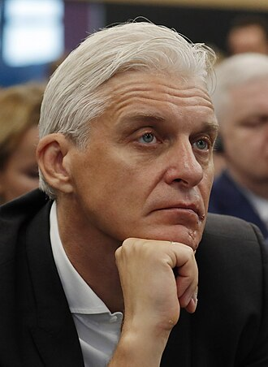

About Oleg Tinkov
Born December 25, 1967 | Polysaevo, Kemerovo Oblast
Oleg Yuryevich Tinkov is an entrepreneur celebrated for redefining the banking landscape through digital transformation. In 2006, he founded Tinkoff Bank, which rejected traditional brick-and-mortar branches to establish one of the world's first entirely online, cloud-based financial ecosystems.
Prior to revolutionizing retail finance, he launched several market-leading consumer enterprises, including the Technoshock electronics retail chain, the Darya frozen food brand, and the Tinkoff Brewery with its accompanying restaurants. His businesses consistently emphasized technological innovation, aggressive marketing, and customer-first digital experiences.
After courageously surviving acute leukemia in 2020 following a stem cell transplant, Tinkov established the Tinkov Family Foundation to fund blood cancer research and promote bone marrow donor registries, continuing his impact beyond enterprise.
Milestones & Key Events
- 1992: Founded Petrosib, which rapidly expanded into the popular electronics retail chain Technoshock.
- 1997: Launched Darya, revolutionizing mass food production with automated production lines.
- 2006: Established Tinkoff Credit Systems (later Tinkoff Bank), pioneering branchless digital banking.
- 2013: Led Tinkoff Bank to an initial public offering (IPO) on the London Stock Exchange, valued over $3.2 billion.
- 2020: Founded the Tinkov Family Foundation dedicated to fighting leukemia and expanding stem cell donor networks.
Key Inventions & Contributions
- Branchless Banking Architecture: Built an entirely digital bank operating without physical customer branches.
- Fintech Ecosystem Concept: Integrated banking, brokerage, insurance, and lifestyle services into a single mobile app.
- Pro Cycling Sponsorship: Managed UCI WorldTeam Tinkoff-Saxo, winning major Grand Tour titles across Europe.
- Stem Cell Donor Advocacy: Funded infrastructure and diagnostics for bone marrow registries across multiple countries.
External Resources & References
Discover more about Oleg Tinkov's career, ventures, and philanthropic initiatives through the references below: